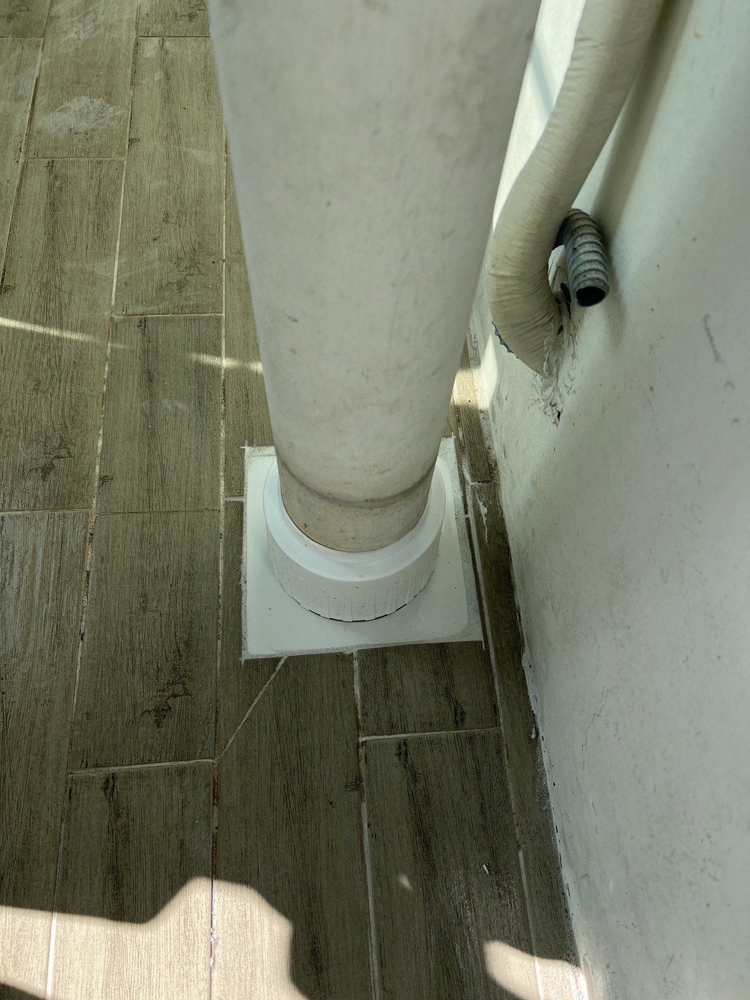
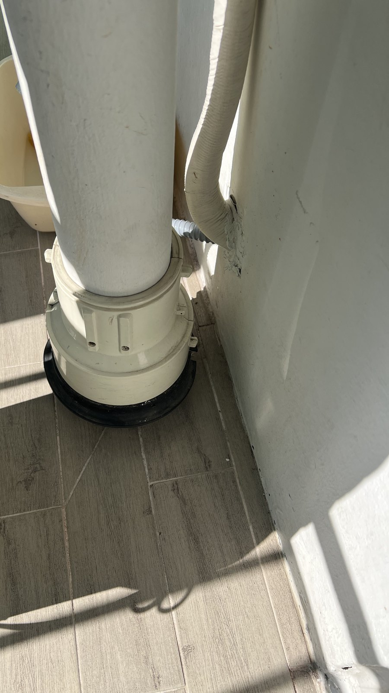
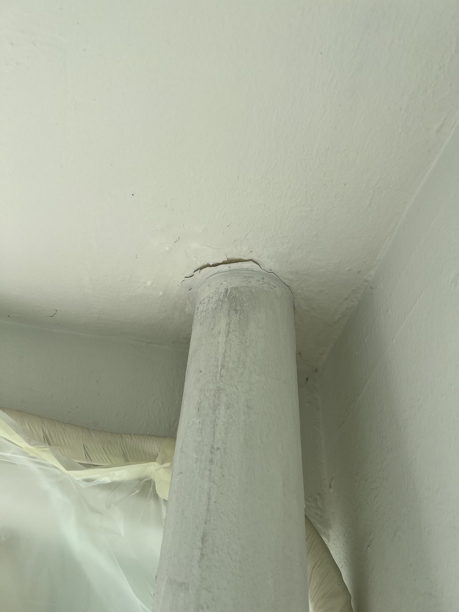
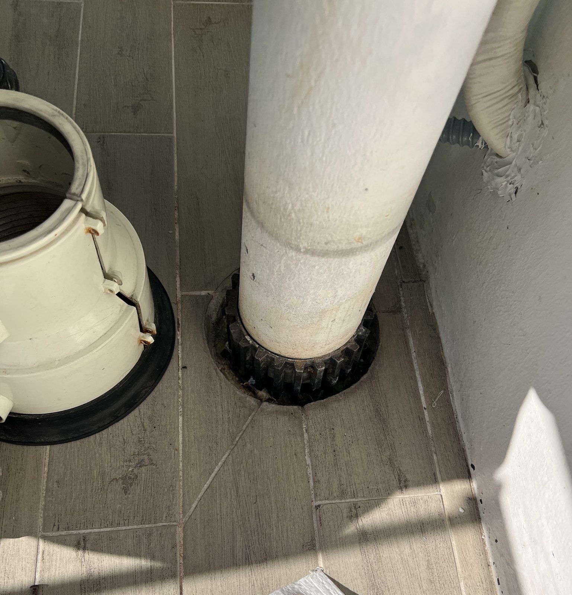
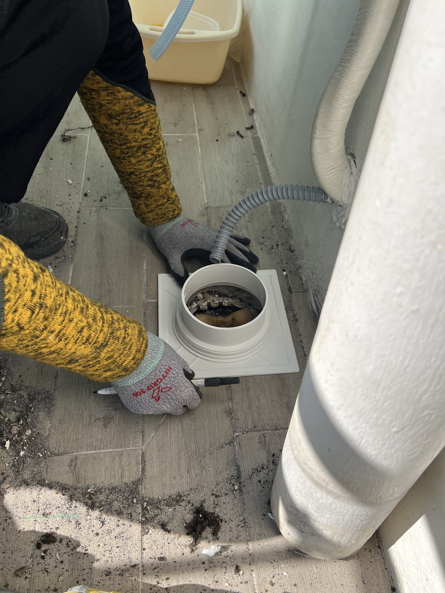
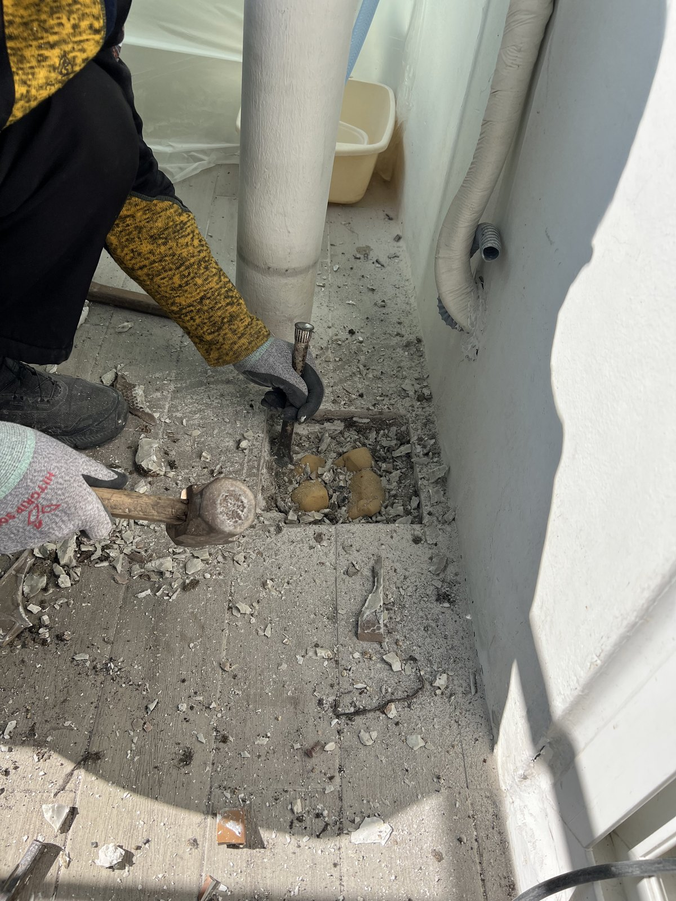
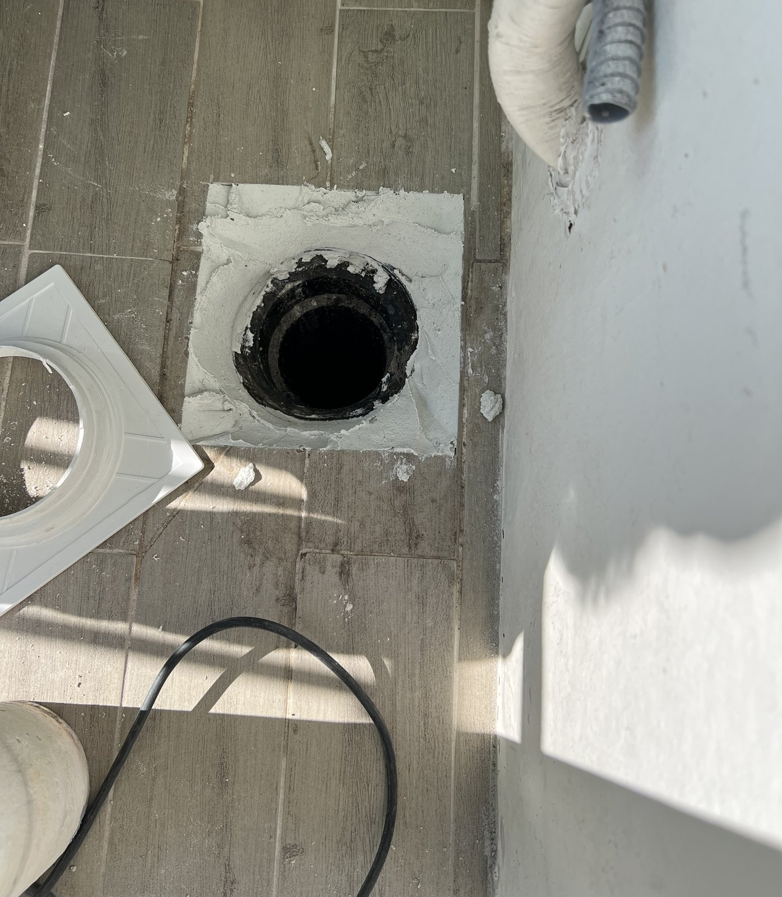
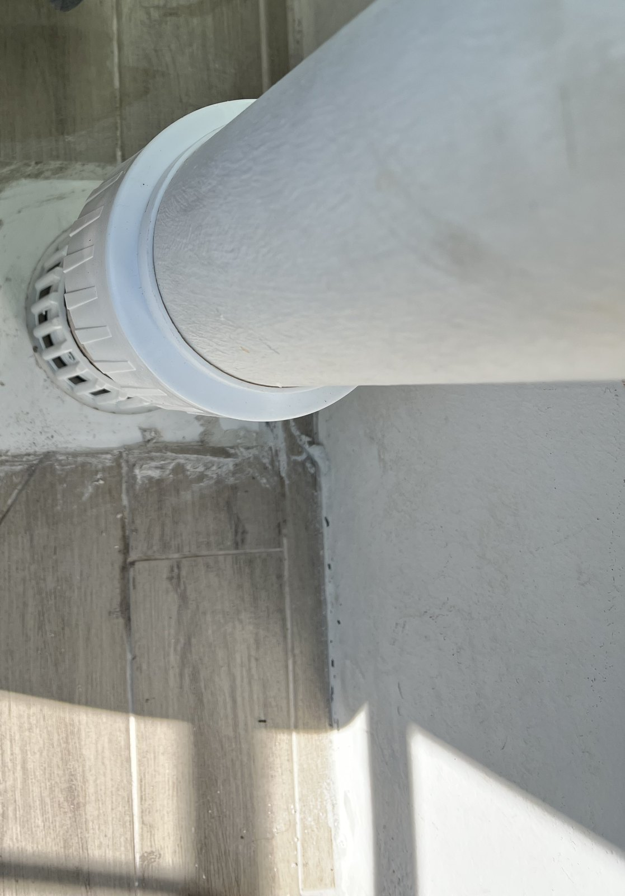
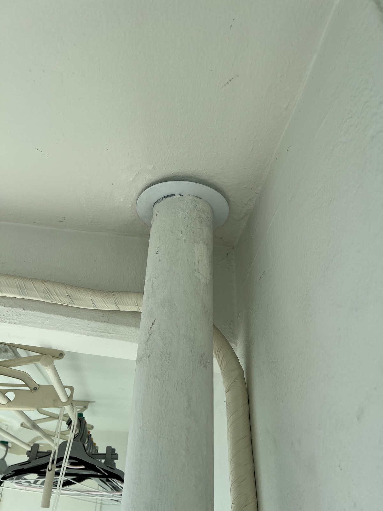

대전 유원아파트 베란다 우수관 하부 교체｜바닥 연결부에 새 사각 받침과 하부 부속

현장 작업 한눈에 보기
- 현장
- 대전 유원아파트 · 베란다 우수관
- 문제
- 우수관 하부 커버·고무 부속
바닥 연결 입구 둘레 - 작업
- 하부 커버·고무 부속 철거
둘레 타일 정리·새 사각 받침·새 하부 부속 - 결과
- 새 받침과 하부 부속 사진 확인
통수시험 수치·소요시간은 미기재
대전 유원아파트 베란다 작업입니다. 우수관 아래 하부 커버와 검은 고무 부속을 걷어 내고, 연결 입구 둘레 타일을 들어내 새 사각 받침을 앉힌 뒤 새 하부 부속으로 관을 다시 세웠습니다. 실제 사진 9장으로 소개합니다.
1. 작업 전 우수관 바닥 쪽
대전 유원아파트 베란다 작업입니다. 2026년 11월 10일 오전 사진을 순서대로 소개합니다.
작업 전 우수관 바닥 쪽입니다. 관 아래에 큰 하부 커버가 검은 고무 받침 위에 놓여 있었습니다.

2. 천장 쪽 관이 지나는 자리
같은 우수관의 천장 쪽입니다. 관이 천장을 지나는 자리의 테두리가 거칠게 드러나 있었습니다.

3. 하부 커버를 떼어 낸 모습
하부 커버를 떼어 내자 관 아래의 검은 고무 부속이 드러났습니다.

4. 새 사각 받침 맞춰 보기
관을 옮기고 바닥 연결 입구에 새 흰색 사각 받침을 대어 크기를 맞춰 봤습니다.

5. 둘레 타일 들어내기
받침이 들어갈 만큼 연결 입구 둘레 타일을 정과 망치로 들어냈습니다.

6. 새 사각 받침 앉히기
연결 입구 둘레를 정리하고 새 사각 받침을 바닥에 앉혔습니다.

7. 새 하부 부속으로 관 잇기
관을 다시 세우고 아래쪽에 새 흰색 하부 부속을 끼워 고정했습니다.

8. 마무리
마무리한 모습입니다. 새 사각 받침 위에서 새 하부 부속이 관을 받치고 있습니다. 1번 사진과 비교해 보세요.
9. 천장 쪽 관 둘레
마무리 뒤 천장 쪽입니다. 관 둘레에 흰색 마감 링이 보입니다. 2번 사진과 비교해 보세요.

10. 확인한 범위와 상담 안내
이번 기록은 사진으로 확인되는 공정 범위입니다. 통수시험 수치와 총 작업시간은 자료가 없어 적지 않았습니다.
베란다 우수관 아래 바닥에 물이 고이거나 부속 둘레가 들떠 보이면, 관 하부와 천장 쪽을 각각 찍어 상담해 주세요.